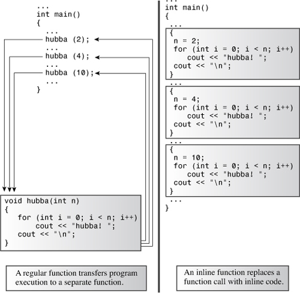
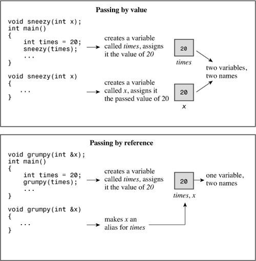
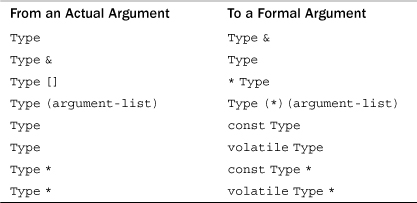

In this chapter you’ll learn about the following:
• Inline functions
• Reference variables
• How to pass function arguments by reference
• Default arguments
• Function overloading
• Function templates
• Function template specializations
With Chapter 7, “Functions: C++’s Programming Modules,” under your belt, you now know a lot about C++ functions, but there’s much more to come. C++ provides many new function features that separate C++ from its C heritage. The new features include inline functions, by-reference variable passing, default argument values, function overloading (polymorphism), and template functions. This chapter, more than any other you’ve read so far, explores features found in C++ but not C, so it marks your first major foray into plus-plussedness.
Inline functions are a C++ enhancement designed to speed up programs. The primary distinction between normal functions and inline functions is not in how you code them but in how the C++ compiler incorporates them into a program. To understand the distinction between inline functions and normal functions, you need to peer more deeply into a program’s innards than we have so far. Let’s do that now.
The final product of the compilation process is an executable program, which consists of a set of machine language instructions. When you start a program, the operating system loads these instructions into the computer’s memory so that each instruction has a particular memory address. The computer then goes through these instructions step-by-step. Sometimes, as when you have a loop or a branching statement, program execution skips over instructions, jumping backward or forward to a particular address. Normal function calls also involve having a program jump to another address (the function’s address) and then jump back when the function terminates. Let’s look at a typical implementation of that process in a little more detail. When a program reaches the function call instruction, the program stores the memory address of the instruction immediately following the function call, copies function arguments to the stack (a block of memory reserved for that purpose), jumps to the memory location that marks the beginning of the function, executes the function code (perhaps placing a return value in a register), and then jumps back to the instruction whose address it saved.1 Jumping back and forth and keeping track of where to jump means that there is an overhead in elapsed time to using functions.
C++ inline functions provide an alternative. In an inline function, the compiled code is “in line” with the other code in the program. That is, the compiler replaces the function call with the corresponding function code. With inline code, the program doesn’t have to jump to another location to execute the code and then jump back. Inline functions thus run a little faster than regular functions, but they come with a memory penalty. If a program calls an inline function at ten separate locations, then the program winds up with ten copies of the function inserted into the code (see Figure 8.1).
Figure 8.1. Inline functions versus regular functions.

You should be selective about using inline functions. If the time needed to execute the function code is long compared to the time needed to handle the function call mechanism, then the time saved is a relatively small portion of the entire process. If the code execution time is short, then an inline call can save a large portion of the time used by the non-inline call. On the other hand, you are now saving a large portion of a relatively quick process, so the absolute time savings may not be that great unless the function is called frequently.
To use this feature, you must take at least one of two actions:
• Preface the function declaration with the keyword inline.
• Preface the function definition with the keyword inline.
A common practice is to omit the prototype and to place the entire definition (meaning the function header and all the function code) where the prototype would normally go.
The compiler does not have to honor your request to make a function inline. It might decide the function is too large or notice that it calls itself (recursion is not allowed or indeed possible for inline functions), or the feature might not be turned on or implemented for your particular compiler.
Listing 8.1 illustrates the inline technique with an inline square() function that squares its argument. Note that the entire definition is on one line. That’s not required, but if the definition doesn’t fit on one or two lines (assuming you don’t have lengthy identifiers), the function is probably a poor candidate for an inline function.
// inline.cpp -- using an inline function
#include <iostream>
// an inline function definition
inline double square(double x) { return x * x; }
int main()
{
using namespace std;
double a, b;
double c = 13.0;
a = square(5.0);
b = square(4.5 + 7.5); // can pass expressions
cout << "a = " << a << ", b = " << b << "\n";
cout << "c = " << c;
cout << ", c squared = " << square(c++) << "\n";
cout << "Now c = " << c << "\n";
return 0;
}
Here’s the output of the program in Listing 8.1:
a = 25, b = 144
c = 13, c squared = 169
Now c = 14
This output illustrates that inline functions pass arguments by value just like regular functions do. If the argument is an expression, such as 4.5 + 7.5, the function passes the value of the expression—12 in this case. This makes C++’s inline facility far superior to C’s macro definitions. See the “Inline Versus Macros” sidebar.
Even though the program doesn’t provide a separate prototype, C++’s prototyping features are still in play. That’s because the entire definition, which comes before the function’s first use, serves as a prototype. This means you can use square() with an int argument or a long argument, and the program automatically type casts the value to type double before passing it to the function.
C++ adds a new compound type to the language—the reference variable. A reference is a name that acts as an alias, or an alternative name, for a previously defined variable. For example, if you make twain a reference to the clemens variable, you can use twain and clemens interchangeably to represent that variable. Of what use is such an alias? Is it to help people who are embarrassed by their choice of variable names? Maybe, but the main use for a reference variable is as a formal argument to a function. If you use a reference as an argument, the function works with the original data instead of with a copy. References provide a convenient alternative to pointers for processing large structures with a function, and they are essential for designing classes. Before you see how to use references with functions, however, let’s examine the basics of defining and using a reference. Keep in mind that the purpose of the following discussion is to illustrate how references work, not how they are typically used.
You might recall that C and C++ use the & symbol to indicate the address of a variable. C++ assigns an additional meaning to the & symbol and presses it into service for declaring references. For example, to make rodents an alternative name for the variable rats, you could do the following:
int rats;
int & rodents = rats; // makes rodents an alias for rats
In this context, & is not the address operator. Instead, it serves as part of the type identifier. Just as char * in a declaration means pointer-to-char, int & means reference-to-int. The reference declaration allows you to use rats and rodents interchangeably; both refer to the same value and the same memory location. Listing 8.2 illustrates the truth of this claim.
// firstref.cpp -- defining and using a reference
#include <iostream>
int main()
{
using namespace std;
int rats = 101;
int & rodents = rats; // rodents is a reference
cout << "rats = " << rats;
cout << ", rodents = " << rodents << endl;
rodents++;
cout << "rats = " << rats;
cout << ", rodents = " << rodents << endl;
// some implementations require type casting the following
// addresses to type unsigned
cout << "rats address = " << &rats;
cout << ", rodents address = " << &rodents << endl;
return 0;
}
Note that the & operator in the following statement is not the address operator but declares that rodents is of type int & (that is, it is a reference to an int variable):
int & rodents = rats;
But the & operator in the next statement is the address operator, with &rodents representing the address of the variable to which rodents refers:
cout <<", rodents address = " << &rodents << endl;
Here is the output of the program in Listing 8.2:
rats = 101, rodents = 101
rats = 102, rodents = 102
rats address = 0x0065fd48, rodents address = 0x0065fd48
As you can see, both rats and rodents have the same value and the same address. (The address values and display format vary from system to system.) Incrementing rodents by one affects both variables. More precisely, the rodents++ operation increments a single variable for which there are two names. (Again, keep in mind that although this example shows you how a reference works, it doesn’t represent the typical use for a reference, which is as a function parameter, particularly for structure and object arguments. We’ll look into these uses pretty soon.)
References tend to be a bit confusing at first to C veterans coming to C++ because they are tantalizingly reminiscent of pointers, yet somehow different. For example, you can create both a reference and a pointer to refer to rats:
int rats = 101;
int & rodents = rats; // rodents a reference
int * prats = &rats; // prats a pointer
Then you could use the expressions rodents and *prats interchangeably with rats and use the expressions &rodents and prats interchangeably with &rats. From this standpoint, a reference looks a lot like a pointer in disguised notation in which the * dereferencing operator is understood implicitly. And, in fact, that’s more or less what a reference is. But there are differences besides those of notation. For one, it is necessary to initialize the reference when you declare it; you can’t declare the reference and then assign it a value later the way you can with a pointer:
int rat;
int & rodent;
rodent = rat; // No, you can't do this.
A reference is rather like a const pointer; you have to initialize it when you create it, and when a reference pledges its allegiance to a particular variable, it sticks to its pledge. That is,
int & rodents = rats;
is, in essence, a disguised notation for something like this:
int * const pr = &rats;
Here, the reference rodents plays the same role as the expression *pr.
Listing 8.3 shows what happens if you try to make a reference change allegiance from a rats variable to a bunnies variable.
// secref.cpp -- defining and using a reference
#include <iostream>
int main()
{
using namespace std;
int rats = 101;
int & rodents = rats; // rodents is a reference
cout << "rats = " << rats;
cout << ", rodents = " << rodents << endl;
cout << "rats address = " << &rats;
cout << ", rodents address = " << &rodents << endl;
int bunnies = 50;
rodents = bunnies; // can we change the reference?
cout << "bunnies = " << bunnies;
cout << ", rats = " << rats;
cout << ", rodents = " << rodents << endl;
cout << "bunnies address = " << &bunnies;
cout << ", rodents address = " << &rodents << endl;
return 0;
}
Here’s the output of the program in Listing 8.3:
rats = 101, rodents = 101
rats address = 0x0065fd44, rodents address = 0x0065fd44
bunnies = 50, rats = 50, rodents = 50
bunnies address = 0x0065fd48, rodents address = 0x0065fd4
Initially, rodents refers to rats, but then the program apparently attempts to make rodents a reference to bunnies:
rodents = bunnies;
For a moment, it looks as if this attempt has succeeded because the value of rodents changes from 101 to 50. But closer inspection reveals that rats also has changed to 50 and that rats and rodents still share the same address, which differs from the bunnies address. Because rodents is an alias for rats, the assignment statement really means the same as the following:
rats = bunnies;
That is, it means “Assign the value of the bunnies variable to the rat variable.” In short, you can set a reference by an initializing declaration, not by assignment.
Suppose you tried the following:
int rats = 101;
int * pt = &rats;
int & rodents = *pt;
int bunnies = 50;
pt = &bunnies;
Initializing rodents to *pt makes rodents refer to rats. Subsequently altering pt to point to bunnies does not alter the fact that rodents refers to rats.
Most often, references are used as function parameters, making a variable name in a function an alias for a variable in the calling program. This method of passing arguments is called passing by reference. Passing by reference allows a called function to access variables in the calling function. C++’s addition of the feature is a break from C, which only passes by value. Passing by value, recall, results in the called function working with copies of values from the calling program (see Figure 8.2). Of course, C lets you get around the passing by value limitation by using pointers.
Figure 8.2. Passing by value and passing by reference.

Let’s compare using references and using pointers in a common computer problem: swapping the values of two variables. A swapping function has to be able to alter values of variables in the calling program. That means the usual approach of passing variables by value won’t work because the function will end up swapping the contents of copies of the original variables instead of the variables themselves. If you pass references, however, the function can work with the original data. Alternatively, you can pass pointers in order to access the original data. Listing 8.4 shows all three methods, including the one that doesn’t work, so that you can compare them.
// swaps.cpp -- swapping with references and with pointers
#include <iostream>
void swapr(int & a, int & b); // a, b are aliases for ints
void swapp(int * p, int * q); // p, q are addresses of ints
void swapv(int a, int b); // a, b are new variables
int main()
{
using namespace std;
int wallet1 = 300;
int wallet2 = 350;
cout << "wallet1 = $" << wallet1;
cout << " wallet2 = $" << wallet2 << endl;
cout << "Using references to swap contents:\n";
swapr(wallet1, wallet2); // pass variables
cout << "wallet1 = $" << wallet1;
cout << " wallet2 = $" << wallet2 << endl;
cout << "Using pointers to swap contents again:\n";
swapp(&wallet1, &wallet2); // pass addresses of variables
cout << "wallet1 = $" << wallet1;
cout << " wallet2 = $" << wallet2 << endl;
cout << "Trying to use passing by value:\n";
swapv(wallet1, wallet2); // pass values of variables
cout << "wallet1 = $" << wallet1;
cout << " wallet2 = $" << wallet2 << endl;
return 0;
}
void swapr(int & a, int & b) // use references
{
int temp;
temp = a; // use a, b for values of variables
a = b;
b = temp;
}
void swapp(int * p, int * q) // use pointers
{
int temp;
temp = *p; // use *p, *q for values of variables
*p = *q;
*q = temp;
}
void swapv(int a, int b) // try using values
{
int temp;
temp = a; // use a, b for values of variables
a = b;
b = temp;
}
Here’s the output of the program in Listing 8.4:
wallet1 = $300 wallet2 = $350 << original values
Using references to swap contents:
wallet1 = $350 wallet2 = $300 << values swapped
Using pointers to swap contents again:
wallet1 = $300 wallet2 = $350 << values swapped again
Trying to use passing by value:
wallet1 = $300 wallet2 = $350 << swap failed
As you’d expect, the reference and pointer methods both successfully swap the contents of the two wallets, whereas the passing by value method fails.
First, note how each function in Listing 8.4 is called:
swapr(wallet1, wallet2); // pass variables
swapp(&wallet1, &wallet2); // pass addresses of variables
swapv(wallet1, wallet2); // pass values of variables
Passing by reference (swapr(wallet1, wallet2)) and passing by value (swapv(wallet1, wallet2)) look identical. The only way you can tell that swapr() passes by reference is by looking at the prototype or the function definition. However, the presence of the address operator (&) makes it obvious when a function passes by address ((swapp(&wallet1, &wallet2)). (Recall that the type declaration int *p means that p is a pointer to an int and therefore the argument corresponding to p should be an address, such as &wallet1.)
Next, compare the code for the functions swapr() (passing by reference) and swapv() (passing by value). The only outward difference between the two is how the function parameters are declared:
void swapr(int & a, int & b)
void swapv(int a, int b)
The internal difference, of course, is that in swapr() the variables a and b serve as aliases for wallet1 and wallet2, so swapping a and b swaps wallet1 and wallet2. But in swapv(), the variables a and b are new variables that copy the values of wallet1 and wallet2, so swapping a and b has no effect on wallet1 and wallet2.
Finally, compare the functions swapr() (passing a reference) and swapp() (passing a pointer). The first difference is in how the function parameters are declared:
void swapr(int & a, int & b)
void swapp(int * p, int * q)
The second difference is that the pointer version requires using the * dereferencing operator throughout when the function uses p and q.
Earlier, I said you should initialize a reference variable when you define it. A function call initializes its parameters with argument values from the function call. So reference function arguments are initialized to the argument passed by the function call. That is, the following function call initializes the formal parameter a to wallet1 and the formal parameter b to wallet2:
swapr(wallet1, wallet2);
Using reference arguments has several twists you need to know about. First, consider Listing 8.5. It uses two functions to cube an argument. One takes a type double argument, and the other takes a reference to double. The actual code for cubing is purposefully a bit odd to illustrate a point.
// cubes.cpp -- regular and reference arguments
#include <iostream>
double cube(double a);
double refcube(double &ra);
int main ()
{
using namespace std;
double x = 3.0;
cout << cube(x);
cout << " = cube of " << x << endl;
cout << refcube(x);
cout << " = cube of " << x << endl;
return 0;
}
double cube(double a)
{
a *= a * a;
return a;
}
double refcube(double &ra)
{
ra *= ra * ra;
return ra;
}
Here is the output of the program in Listing 8.5:
27 = cube of 3
27 = cube of 27
Note that the refcube() function modifies the value of x in main() and cube() doesn’t, which reminds you why passing by value is the norm. The variable a is local to cube(). It is initialized to the value of x, but changing a has no effect on x. But because refcube() uses a reference argument, the changes it makes to ra are actually made to x. If your intent is that a function use the information passed to it without modifying the information, and if you’re using a reference, you should use a constant reference. Here, for example, you should use const in the function prototype and function header:
double refcube(const double &ra);
If you do this, the compiler generates an error message when it finds code altering the value of ra.
Incidentally, if you need to write a function along the lines of this example (that is, using a basic numeric type), you should use passing by value rather than the more exotic passing by reference. Reference arguments become useful with larger data units, such as structures and classes, as you’ll soon see.
Functions that pass by value, such as the cube() function in Listing 8.5, can use many kinds of actual arguments. For example, all the following calls are valid:
double z = cube(x + 2.0); // evaluate x + 2.0, pass value
z = cube(8.0); // pass the value 8.0
int k = 10;
z = cube(k); // convert value of k to double, pass value
double yo[3] = { 2.2, 3.3, 4.4};
z = cube (yo[2]); // pass the value 4.4
Suppose you try similar arguments for a function with a reference parameter. It would seem that passing a reference should be more restrictive. After all, if ra is the alternative name for a variable, then the actual argument should be that variable. Something like the following doesn’t appear to make sense because the expression x + 3.0 is not a variable:
double z = refcube(x + 3.0); // should not compile
For example, you can’t assign a value to such an expression:
x + 3.0 = 5.0; // nonsensical
What happens if you try a function call like refcube(x + 3.0)? In contemporary C++, that’s an error, and most compilers will tell you so. Some older ones give you a warning along the following lines:
Warning: Temporary used for parameter 'ra' in call to refcube(double &)
The reason for this milder response is that C++, in its early years, did allow you to pass expressions to a reference variable. In some cases, it still does. What happens is that because x + 3.0 is not a type double variable, the program creates a temporary, nameless variable, initializing it to the value of the expression x + 3.0. Then ra becomes a reference to that temporary variable. Let’s take a closer look at temporary variables and see when they are and are not created.
constC++ can generate a temporary variable if the actual argument doesn’t match a reference argument. Currently, C++ permits this only if the argument is a const reference, but this was not always the case. Let’s look at the cases in which C++ does generate temporary variables and see why the restriction to a const reference makes sense.
First, when is a temporary variable created? Provided that the reference parameter is a const, the compiler generates a temporary variable in two kinds of situations:
• When the actual argument is the correct type but isn’t an lvalue
• When the actual argument is of the wrong type, but it’s of a type that can be converted to the correct type
What is an lvalue? An argument that’s an lvalue is a data object that can be referenced by address. For example, a variable, an array element, a structure member, a reference, and a dereferenced pointer are lvalues. Non-lvalues include literal constants (aside from quoted strings, which are represented by their addresses) and expressions with multiple terms. The term lvalue in C originally meant entities that could appear on the left side of an assignment statement, but that was before the const keyword was introduced. Now both a regular variable and a const variable would be considered lvalues because both can be accessed by address. But the regular variable can be further characterized as being a modifiable lvalue and the const variable as a non-modifiable lvalue.
Now, to return to our example, suppose you redefine refcube() so that it has a constant reference argument:
double refcube(const double &ra)
{
return ra * ra * ra;
}
Next, consider the following code:
double side = 3.0;
double * pd = &side;
double & rd = side;
long edge = 5L;
double lens[4] = { 2.0, 5.0, 10.0, 12.0};
double c1 = refcube(side); // ra is side
double c2 = refcube(lens[2]); // ra is lens[2]
double c3 = refcube(rd); // ra is rd is side
double c4 = refcube(*pd); // ra is *pd is side
double c5 = refcube(edge); // ra is temporary variable
double c6 = refcube(7.0); // ra is temporary variable
double c7 = refcube(side + 10.0); // ra is temporary variable
The arguments side, lens[2], rd, and *pd are type double data objects with names, so it is possible to generate a reference for them, and no temporary variables are needed. (Recall that an element of an array behaves like a variable of the same type as the element.) But although edge is a variable, it is of the wrong type. A reference to a double can’t refer to a long. The arguments 7.0 and side + 10.0, on the other hand, are the right type, but they are not named data objects. In each of these cases, the compiler generates a temporary, anonymous variable and makes ra refer to it. These temporary variables last for the duration of the function call, but then the compiler is free to dump them.
So why is this behavior okay for constant references but not otherwise? Recall the swapr() function from Listing 8.4:
void swapr(int & a, int & b) // use references
{
int temp;
temp = a; // use a, b for values of variables
a = b;
b = temp;
}
What would happen if you did the following under the freer rules of early C++?
long a = 3, b = 5;
swapr(a, b);
Here there is a type mismatch, so the compiler would create two temporary int variables, initialize them to 3 and 5, and then swap the contents of the temporary variables, leaving a and b unaltered.
In short, if the intent of a function with reference arguments is to modify variables passed as arguments, situations that create temporary variables thwart that purpose. The solution is to prohibit creating temporary variables in these situations, and that is what the C++ Standard now does. (However, some compilers still, by default, issue warnings instead of error messages, so if you see a warning about temporary variables, don’t ignore it.)
Now think about the refcube() function. Its intent is merely to use passed values, not to modify them, so temporary variables cause no harm and make the function more general in the sorts of arguments it can handle. Therefore, if the declaration states that a reference is const, C++ generates temporary variables when necessary. In essence, a C++ function with a const reference formal argument and a nonmatching actual argument mimics the traditional passing by value behavior, guaranteeing that the original data is unaltered and using a temporary variable to hold the value.
If a function call argument isn’t an lvalue or does not match the type of the corresponding const reference parameter, C++ creates an anonymous variable of the correct type, assigns the value of the function call argument to the anonymous variable, and has the parameter refer to that variable.
C++11 introduces a second kind of reference, called an rvalue reference, that can refer to an rvalue. It’s declared using &&:
double && rref = std::sqrt(36.00); // not allowed for double &
double j = 15.0;
double && jref = 2.0* j + 18.5; // not allowed for double &
std::cout << rref << '\n'; // display 6.0
std::cout << jref << '\n'; // display 48.5;
The rvalue reference was introduced mainly to help library designers provide more efficient implementations of certain operations. Chapter 18, “Visiting will the New C++ Standard,” discusses how rvalue references are used to implement an approach called move semantics. The original reference type (the one declared using a single &) is now called an lvalue reference.
References work wonderfully with structures and classes, C++’s user-defined types. Indeed, references were introduced primarily for use with these types, not for use with the basic built-in types.
The method for using a reference to a structure as a function parameter is the same as the method for using a reference to a basic variable: You just use the & reference operator when declaring a structure parameter. For example, suppose we have the following definition of a structure:
struct free_throws
{
std::string name;
int made;
int attempts;
float percent;
};
Then a function using a reference to this type could be prototyped as follows:
void set_pc(free_throws & ft); // use a reference to a structure
If the intent is that the function doesn’t alter the structure, use const:
void display(const free_throws & ft); // don't allow changes to structure
The program in Listing 8.6 does exactly these things. It also adds an interesting twist by having a function return a reference to the structure. This works a bit differently from returning a structure. There are some cautions to note, which we’ll get to shortly.
//strc_ref.cpp -- using structure references
#include <iostream>
#include <string>
struct free_throws
{
std::string name;
int made;
int attempts;
float percent;
};
void display(const free_throws & ft);
void set_pc(free_throws & ft);
free_throws & accumulate(free_throws & target, const free_throws & source);
int main()
{
// partial initializations – remaining members set to 0
free_throws one = {"Ifelsa Branch", 13, 14};
free_throws two = {"Andor Knott", 10, 16};
free_throws three = {"Minnie Max", 7, 9};
free_throws four = {"Whily Looper", 5, 9};
free_throws five = {"Long Long", 6, 14};
free_throws team = {"Throwgoods", 0, 0};
// no initialization
free_throws dup;
set_pc(one);
display(one);
accumulate(team, one);
display(team);
// use return value as argument
display(accumulate(team, two));
accumulate(accumulate(team, three), four);
display(team);
// use return value in assignment
dup = accumulate(team,five);
std::cout << "Displaying team:\n";
display(team);
std::cout << "Displaying dup after assignment:\n";
display(dup);
set_pc(four);
// ill-advised assignment
accumulate(dup,five) = four;
std::cout << "Displaying dup after ill-advised assignment:\n";
display(dup);
return 0;
}
void display(const free_throws & ft)
{
using std::cout;
cout << "Name: " << ft.name << '\n';
cout << " Made: " << ft.made << '\t';
cout << "Attempts: " << ft.attempts << '\t';
cout << "Percent: " << ft.percent << '\n';
}
void set_pc(free_throws & ft)
{
if (ft.attempts != 0)
ft.percent = 100.0f *float(ft.made)/float(ft.attempts);
else
ft.percent = 0;
}
free_throws & accumulate(free_throws & target, const free_throws & source)
{
target.attempts += source.attempts;
target.made += source.made;
set_pc(target);
return target;
}
Name: Ifelsa Branch
Made: 13 Attempts: 14 Percent: 92.8571
Name: Throwgoods
Made: 13 Attempts: 14 Percent: 92.8571
Name: Throwgoods
Made: 23 Attempts: 30 Percent: 76.6667
Name: Throwgoods
Made: 35 Attempts: 48 Percent: 72.9167
Displaying team:
Name: Throwgoods
Made: 41 Attempts: 62 Percent: 66.129
Displaying dup after assignment:
Name: Throwgoods
Made: 41 Attempts: 62 Percent: 66.129
Displaying dup after ill-advised assignment:
Name: Whily Looper
Made: 5 Attempts: 9 Percent: 55.5556
The program begins by initializing several structure objects. Recall that if there are fewer initializers than members, the remaining members (just the percent members in this case) are set to 0. The first function call is this:
set_pc(one);
Because the formal parameter ft in set_pc() is a reference, ft refers to one, and the code in set_pc() sets the one.percent member. Passing by value would not work in this case because that would result in setting the percent member of a temporary copy of one. The alternative, as you may recall from the previous chapter, is using a pointer parameter and passing an address, but the form is slightly more complicated:
set_pcp(&one); // using pointers instead - &one instead of one
...
void set_pcp(free_throws * pt)
{
if (pt->attempts != 0)
pt->percent = 100.0f *float(pt->made)/float(pt->attempts);
else
pt->percent = 0;
}
The next function call is this:
display(one);
Because display() displays the contents of the structure without altering them, the function uses a const reference parameter. In this case, one could have passed the structure by value, but using a reference is more economical in time and memory than making a copy of the original structure.
The next function call is this:
accumulate(team, one);
The accumulate() function takes two structure arguments. It adds data from the attempts and made members of the second structure to the corresponding members of the first structure. Only the first structure is modified, so the first parameter is a reference, whereas the second parameter is a const reference:
free_throws & accumulate(free_throws & target, const free_throws & source);
What about the return value? The function call we just discussed didn’t use it; as far as that use went, the function could have been type void. But look at this function call:
display(accumulate(team, two));
What’s going on here? Let’s follow the structure object team. First, team is passed to accumulate() as its first argument. That means that the target object in accumulate() really is team. The accumulate() function modifies team, then returns it as a reference. Note that the actual return statement looks like this:
return target;
Nothing in this statement indicates that a reference is being returned. That information comes from the function header (and, also, from the prototype):
free_throws & accumulate(free_throws & target, const free_throws & source)
If the return type were declared free_throws instead of free_throws &, the same return statement would return a copy of target (and hence a copy of team). But the return type is a reference, so that means the return value is the original team object first passed to accumulate().
What happens next? The accumulate() return value is the first argument to display(), so that means team is the first argument to display(). Because the display() parameter is a reference, that means the ft object in display() really is team. Therefore, the contents of team get displayed. The net effect of
display(accumulate(team, two));
is the same as that of the following:
accumulate(team, two);
display(team);
The same logic applies to this statement:
accumulate(accumulate(team, three), four);
This has the same effect as the following:
accumulate(team, three);
accumulate(team, four);
Next, the program uses an assignment statement:
dup = accumulate(team,five);
As you might expect, this copies the values in team to dup.
Finally, the program uses accumulate() in a manner for which it was not intended:
accumulate(dup,five) = four;
This statement—that is, assigning a value to a function call—works because the return value is a reference. The code won’t compile if accumulate() returns by value. Because the return value is a reference to dup, this code has the same effect as the following:
accumulate(dup,five); // add five's data to dup
dup = four; // overwrite the contents of dup with the contents of four
The second statement wipes out the work accomplished by the first, so the original assignment statement was not a good use of accumulate().
Let’s look a bit further at how returning a reference is different from the traditional return mechanism. The latter works much like passing by value does with function parameters. The expression following the return is evaluated, and that value is passed back to the calling function. Conceptually, this value is copied to a temporary location and the calling program uses the value. Consider the following:
double m = sqrt(16.0);
cout << sqrt(25.0);
In the first statement, the value 4.0 is copied to a temporary location and then the value in that location is copied to m. In the second statement, the value 5.0 is copied to a temporary location, then the contents of that location are passed on to cout. (This is the conceptual description. In practice, an optimizing compiler might consolidate some of the steps.)
Now consider this statement:
dup = accumulate(team,five);
If accumulate() returned a structure instead of a reference to a structure, this could involve copying the entire structure to a temporary location and then copying that copy to dup. But with a reference return value, team is copied directly to dup, a more efficient approach.
The single most important point to remember when returning a reference is to avoid returning a reference to a memory location that ceases to exist when the function terminates. What you want to avoid is code along these lines:
const free_throws & clone2(free_throws & ft)
{
free_throws newguy; // first step to big error
newguy = ft; // copy info
return newguy; // return reference to copy
}
This has the unfortunate effect of returning a reference to a temporary variable (newguy) that passes from existence as soon as the function terminates. (Chapter 9, “Memory Models and Namespaces,” discusses the persistence of various kinds of variables.) Similarly, you should avoid returning pointers to such temporary variables.
The simplest way to avoid this problem is to return a reference that was passed as an argument to the function. A reference parameter will refer to data used by the calling function; hence, the returned reference will refer to that same data. This, for example, is what accumulate() does in Listing 8.6.
A second method is to use new to create new storage. You’ve already seen examples in which new creates space for a string and the function returns a pointer to that space. Here’s how you could do something similar with a reference:
const free_throws & clone(free_throws & ft)
{
free_throws * pt;
*pt = ft; // copy info
return *pt; // return reference to copy
}
The first statement creates a nameless free_throws structure. The pointer pt points to the structure, so *pt is the structure. The code appears to return the structure, but the function declaration indicates that the function really returns a reference to this structure. You could then use the function this way:
free_throws & jolly = clone(three);
This makes jolly a reference to the new structure. There is a problem with this approach: You should use delete to free memory allocated by new when the memory is no longer needed. A call to clone() conceals the call to new, making it simpler to forget to use delete later. The auto_ptr template or, better, the C++11 unique_ptr discussed in Chapter 16, “The string Class and the Standard Template Library,” can help automate the deletion process.
const with a Reference Return?Listing 8.6, as you’ll recall, had this statement:
accumulate(dup,five) = four;
It had the effect of first adding data from five to dup, then overwriting the contents of dup with the contents of four. Why does this statement compile? Assignment requires a modifiable lvalue on the left. That is, the subexpression on the left of an assignment expression should identify a block of memory that can be modified. In this case, the function returned a reference to dup, which does identify such a block of memory. So the statement is valid.
Regular (non reference) return types, on the other hand, are rvalues, values that can’t be accessed by address. Such expressions can appear on the right side of an assignment statement but not the left. Other examples of rvalues include literals, such as 10.0, and expressions such as x + y. Clearly, it doesn’t make sense to try to take the address of a literal such as 10.0, but why is a normal function return value an rvalue? It’s because the return value, you’ll recall, resides in a temporary memory location that doesn’t necessarily persist even until the next statement.
Suppose you want to use a reference return value but don’t want to permit behavior such as assigning a value to accumulate(). Just make the return type a const reference:
const free_throws &
accumulate(free_throws & target, const free_throws & source);
The return type now is const, hence a nonmodifiable lvalue. Therefore, the assignment no longer is allowed:
accumulate(dup,five) = four; // not allowed for const reference return
What about the other function calls in the program? With a const reference return type, the following statement would still be allowed:
display(accumulate(team, two));
That’s because the formal parameter for display() also is type const free_thows &. But the following statement would not be allowed because the first formal parameter for accumulate() is not const:
accumulate(accumulate(team, three), four);
Is this a great loss? Not in this case because you still can do the following:
accumulate(team, three);
accumulate(team, four);
And of course you still could use accumulate() on the right side of an assignment statement.
By omitting const, you can write shorter but more obscure-looking code.
Usually, you’re better off avoiding the addition of obscure features to a design because obscure features often expand the opportunities for obscure errors. Making the return type a const reference therefore protects you from the temptation of obfuscation. Occasionally, however, omitting const does make sense. The overloaded << operator discussed in Chapter 11, “Working with Classes,” is an example.
The usual C++ practice for passing class objects to a function is to use references. For instance, you would use reference parameters for functions taking objects of the string, ostream, istream, ofstream, and ifstream classes as arguments.
Let’s look at an example that uses the string class and illustrates some different design choices, some of them bad. The general idea is to create a function that adds a given string to each end of another string. Listing 8.7 provides three functions that are intended to do this. However, one of the designs is so flawed that it may cause the program to crash or even not compile.
// strquote.cpp -- different designs
#include <iostream>
#include <string>
using namespace std;
string version1(const string & s1, const string & s2);
const string & version2(string & s1, const string & s2); // has side effect
const string & version3(string & s1, const string & s2); // bad design
int main()
{
string input;
string copy;
string result;
cout << "Enter a string: ";
getline(cin, input);
copy = input;
cout << "Your string as entered: " << input << endl;
result = version1(input, "***");
cout << "Your string enhanced: " << result << endl;
cout << "Your original string: " << input << endl;
result = version2(input, "###");
cout << "Your string enhanced: " << result << endl;
cout << "Your original string: " << input << endl;
cout << "Resetting original string.\n";
input = copy;
result = version3(input, "@@@");
cout << "Your string enhanced: " << result << endl;
cout << "Your original string: " << input << endl;
return 0;
}
string version1(const string & s1, const string & s2)
{
string temp;
temp = s2 + s1 + s2;
return temp;
}
const string & version2(string & s1, const string & s2) // has side effect
{
s1 = s2 + s1 + s2;
// safe to return reference passed to function
return s1;
}
const string & version3(string & s1, const string & s2) // bad design
{
string temp;
temp = s2 + s1 + s2;
// unsafe to return reference to local variable
return temp;
}
Here is a sample run of the program in Listing 8.7:
Enter a string: It's not my fault.
Your string as entered: It's not my fault.
Your string enhanced: ***It's not my fault.***
Your original string: It's not my fault.
Your string enhanced: ###It's not my fault.###
Your original string: ###It's not my fault.###
Resetting original string.
At this point the program crashed.
Version 1 of the function in Listing 8.7 is the most straightforward of the three:
string version1(const string & s1, const string & s2)
{
string temp;
temp = s2 + s1 + s2;
return temp;
}
It takes two string arguments and uses string class addition to create a new string that has the desired properties. Note that the two function arguments are const references. The function would produce the same end result if it just passed string objects:
string version4(string s1, string s2) // would work the same
In this case, s1 and s2 would be brand-new string objects. Thus, using references is more efficient because the function doesn’t have to create new objects and copy data from the old objects to the new. The use of the const qualifier indicates that this function will use, but not modify, the original strings.
The temp object is a new object, local to the version1() function, and it ceases to exist when the function terminates. Thus, returning temp as a reference won’t work, so the function type is string. This means the contents of temp will be copied to a temporary return location. Then, in main(), the contents of the return location are copied to the string named result:
result = version1(input, "***");
The version2() function doesn’t create a temporary string. Instead, it directly alters the original string:
const string & version2(string & s1, const string & s2) // has side effect
{
s1 = s2 + s1 + s2;
// safe to return reference passed to function
return s1;
}
This function is allowed to alter s1 because s1, unlike s2, is not declared using const.
Because s1 is a reference to an object (input) in main(), it’s safe to return s1 as a reference. Because s1 is a reference to input, the line
result = version2(input, "###");
essentially becomes equivalent to the following:
version2(input, "###"); // input altered directly by version2()
result = input; // reference to s1 is reference to input
However, because s1 is a reference to input, calling this function has the side effect of altering input also:
Your original string: It's not my fault.
Your string enhanced: ###It's not my fault.###
Your original string: ###It's not my fault.###
Thus, if you want to keep the original string unaltered, this is the wrong design.
The third version in Listing 8.7 is a reminder of what not to do:
const string & version3(string & s1, const string & s2) // bad design
{
string temp;
temp = s2 + s1 + s2;
// unsafe to return reference to local variable
return temp;
}
It has the fatal flaw of returning a reference to a variable declared locally inside version3(). This function compiles (with a warning), but the program crashes when attempting to execute the function. Specifically, the following assignment aspect causes the problem:
result = version3(input, "@@@");
The program attempts to refer to memory that is no longer in use.
The ostream and ofstream classes bring an interesting property of references to the fore. As you may recall from Chapter 6, “Branching Statements and Logical Operators,” objects of the ofstream type can use ostream methods, allowing file input/output to use the same forms as console input/output. The language feature that makes it possible to pass features from one class to another is called inheritance, and Chapter 13, “Class Inheritance,” discusses this feature in detail. In brief, ostream is termed a base class (because the ofstream class is based on it) and ofstream is termed a derived class (because it is derived from ostream). A derived class inherits the base class methods, which means that an ofstream object can use base class features such as the precision() and setf() formatting methods.
Another aspect of inheritance is that a base class reference can refer to a derived class object without requiring a type cast. The practical upshot of this is that you can define a function having a base class reference parameter, and that function can be used with base class objects and also with derived objects. For example, a function with a type ostream & parameter can accept an ostream object, such as cout, or an ofstream object, such as you might declare, equally well.
Listing 8.8 demonstrates this point by using the same function to write data to a file and to display the data onscreen; only the function call argument is changed. This program solicits the focal length of a telescope objective (its main mirror or lens) and of some eyepieces. Then it calculates and displays the magnification each eyepiece would produce in that telescope. The magnification equals the focal length of the telescope divided by the focal length of the eyepiece used, so the calculation is simple. The program also uses some formatting methods, which, as promised, work equally well with cout and with ofstream objects (fout, in this example).
//filefunc.cpp -- function with ostream & parameter
#include <iostream>
#include <fstream>
#include <cstdlib>
using namespace std;
void file_it(ostream & os, double fo, const double fe[],int n);
const int LIMIT = 5;
int main()
{
ofstream fout;
const char * fn = "ep-data.txt";
fout.open(fn);
if (!fout.is_open())
{
cout << "Can't open " << fn << ". Bye.\n";
exit(EXIT_FAILURE);
}
double objective;
cout << "Enter the focal length of your "
"telescope objective in mm: ";
cin >> objective;
double eps[LIMIT];
cout << "Enter the focal lengths, in mm, of " << LIMIT
<< " eyepieces:\n";
for (int i = 0; i < LIMIT; i++)
{
cout << "Eyepiece #" << i + 1 << ": ";
cin >> eps[i];
}
file_it(fout, objective, eps, LIMIT);
file_it(cout, objective, eps, LIMIT);
cout << "Done\n";
return 0;
}
void file_it(ostream & os, double fo, const double fe[],int n)
{
ios_base::fmtflags initial;
initial = os.setf(ios_base::fixed); // save initial formatting state
os.precision(0);
os << "Focal length of objective: " << fo << " mm\n";
os.setf(ios::showpoint);
os.precision(1);
os.width(12);
os << "f.l. eyepiece";
os.width(15);
os << "magnification" << endl;
for (int i = 0; i < n; i++)
{
os.width(12);
os << fe[i];
os.width(15);
os << int (fo/fe[i] + 0.5) << endl;
}
os.setf(initial); // restore initial formatting state
}
Here is a sample run of the program in Listing 8.8:
Enter the focal length of your telescope objective in mm: 1800
Enter the focal lengths, in mm, of 5 eyepieces:
Eyepiece #1: 30
Eyepiece #2: 19
Eyepiece #3: 14
Eyepiece #4: 8.8
Eyepiece #5: 7.5
Focal length of objective: 1800 mm
f.l. eyepiece magnification
30.0 60
19.0 95
14.0 129
8.8 205
7.5 240
Done
The following line writes the eyepiece data to the file ep-data.txt:
file_it(fout, objective, eps, LIMIT);
And this line writes the identical information in the identical format to the screen:
file_it(cout, objective, eps, LIMIT);
The main point of Listing 8.8 is that the os parameter, which is type ostream &, can refer to an ostream object such as cout and to an ofstream object such as fout. But the program also illustrates how ostream formatting methods can be used for both types. Let’s review, or, in some cases, examine for the first time, some of these methods. (Chapter 17, “Input, Output, and Files,” provides a fuller discussion.)
The setf() method allows you to set various formatting states. For example, the method call setf(ios_base::fixed) places an object in the mode of using fixed decimal-point notation. The call setf(ios_base:showpoint) places an object in the mode of showing a trailing decimal point, even if the following digits are zeros. The precision() method indicates the number of figures to be shown to the right of the decimal (provided that the object is in fixed mode). All these settings stay in place unless they’re reset by another method call. The width() call sets the field width to be used for the next output action. This setting holds for displaying one value only, and then it reverts to the default. (The default is a field width of zero, which is then expanded to just fit the actual quantity being displayed.)
The file_it() function uses an interesting pair of method calls:
ios_base::fmtflags initial;
initial = os.setf(ios_base::fixed); // save initial formatting state
...
os.setf(initial); // restore initial formatting state
The setf() method returns a copy of all the formatting settings in effect before the call was made. ios_base::fmtflags is a fancy name for the type needed to store this information. So the assignment to initial stores the settings that were in place before the file_it() function was called. The initial variable can then be used as an argument to setf() to reset all the formatting settings to this original value. Thus, the function restores the object to the state it had before being passed to file_it().
Knowing more about classes will help you understand better how these methods work and, why, for example, ios_base keeps popping up. But you don’t have to wait until Chapter 17 to use these methods.
One final point: Each object stores its own formatting settings. So when the program passes cout to file_it(), cout’s settings are altered and then restored. When the program passes fout to file_it(), fout’s settings are altered and then restored.
There are two main reasons for using reference arguments:
• To allow you to alter a data object in the calling function
• To speed up a program by passing a reference instead of an entire data object
The second reason is most important for larger data objects, such as structures and class objects. These two reasons are the same reasons you might have for using a pointer argument. This makes sense because reference arguments are really just a different interface for pointer-based code. So when should you use a reference? Use a pointer? Pass by value? The following are some guidelines.
A function uses passed data without modifying it:
• If the data object is small, such as a built-in data type or a small structure, pass it by value.
• If the data object is an array, use a pointer because that’s your only choice. Make the pointer a pointer to const.
• If the data object is a good-sized structure, use a const pointer or a const reference to increase program efficiency. You save the time and space needed to copy a structure or a class design. Make the pointer or reference const.
• If the data object is a class object, use a const reference. The semantics of class design often require using a reference, which is the main reason C++ added this feature. Thus, the standard way to pass class object arguments is by reference.
A function modifies data in the calling function:
• If the data object is a built-in data type, use a pointer. If you spot code like fixit(&x), where x is an int, it’s pretty clear that this function intends to modify x.
• If the data object is an array, use your only choice: a pointer.
• If the data object is a structure, use a reference or a pointer.
• If the data object is a class object, use a reference.
Of course, these are just guidelines, and there might be reasons for making different choices. For example, cin uses references for basic types so that you can use cin >> n instead of cin >> &n.
Let’s look at another topic from C++’s bag of new tricks: the default argument. A default argument is a value that’s used automatically if you omit the corresponding actual argument from a function call. For example, if you set up void wow(int n) so that n has a default value of 1, the function call wow() is the same as wow(1). This gives you flexibility in how you use a function. Suppose you have a function called left() that returns the first n characters of a string, with the string and n as arguments. More precisely, the function returns a pointer to a new string consisting of the selected portion of the original string. For example, the call left("theory", 3) constructs a new string "the" and returns a pointer to it. Now suppose you establish a default value of 1 for the second argument. The call left("theory", 3) would work as before, with your choice of 3 overriding the default. But the call left("theory"), instead of being an error, would assume a second argument of 1 and return a pointer to the string "t". This kind of default is helpful if your program often needs to extract a one-character string but occasionally needs to extract longer strings.
How do you establish a default value? You must use the function prototype. Because the compiler looks at the prototype to see how many arguments a function uses, the function prototype also has to alert the program to the possibility of default arguments. The method is to assign a value to the argument in the prototype. For example, here’s the prototype fitting this description of left():
char * left(const char * str, int n = 1);
You want the function to return a new string, so its type is char*, or pointer-to-char. You want to leave the original string unaltered, so you use the const qualifier for the first argument. You want n to have a default value of 1, so you assign that value to n. A default argument value is an initialization value. Thus, the preceding prototype initializes n to the value 1. If you leave n alone, it has the value 1, but if you pass an argument, the new value overwrites the 1.
When you use a function with an argument list, you must add defaults from right to left. That is, you can’t provide a default value for a particular argument unless you also provide defaults for all the arguments to its right:
int harpo(int n, int m = 4, int j = 5); // VALID
int chico(int n, int m = 6, int j); // INVALID
int groucho(int k = 1, int m = 2, int n = 3); // VALID
For example, the harpo() prototype permits calls with one, two, or three arguments:
beeps = harpo(2); // same as harpo(2,4,5)
beeps = harpo(1,8); // same as harpo(1,8,5)
beeps = harpo (8,7,6); // no default arguments used
The actual arguments are assigned to the corresponding formal arguments from left to right; you can’t skip over arguments. Thus, the following isn’t allowed:
beeps = harpo(3, ,8); // invalid, doesn't set m to 4
Default arguments aren’t a major programming breakthrough; rather, they are a convenience. When you begin working with class design, you’ll find that they can reduce the number of constructors, methods, and method overloads you have to define.
Listing 8.9 puts default arguments to use. Note that only the prototype indicates the default. The function definition is the same as it would be without default arguments.
// left.cpp -- string function with a default argument
#include <iostream>
const int ArSize = 80;
char * left(const char * str, int n = 1);
int main()
{
using namespace std;
char sample[ArSize];
cout << "Enter a string:\n";
cin.get(sample,ArSize);
char *ps = left(sample, 4);
cout << ps << endl;
delete [] ps; // free old string
ps = left(sample);
cout << ps << endl;
delete [] ps; // free new string
return 0;
}
// This function returns a pointer to a new string
// consisting of the first n characters in the str string.
char * left(const char * str, int n)
{
if(n < 0)
n = 0;
char * p = new char[n+1];
int i;
for (i = 0; i < n && str[i]; i++)
p[i] = str[i]; // copy characters
while (i <= n)
p[i++] = '\0'; // set rest of string to '\0'
return p;
}
Here’s a sample run of the program in Listing 8.9:
Enter a string:
forthcoming
fort
f
The program in Listing 8.9 uses new to create a new string for holding the selected characters. One awkward possibility is that an uncooperative user may request a negative number of characters. In that case, the function sets the character count to 0 and eventually returns the null string. Another awkward possibility is that an irresponsible user may request more characters than the string contains. The function protects against this by using a combined test:
i < n && str[i]
The i < n test stops the loop after n characters have been copied. The second part of the test, the expression str[i], is the code for the character about to be copied. If the loop reaches the null character, the code is 0, and the loop terminates. The final while loop terminates the string with the null character and then sets the rest of the allocated space, if any, to null characters.
Another approach for setting the size of the new string is to set n to the smaller of the passed value and the string length:
int len = strlen(str);
n = (n < len) ? n : len; // the lesser of n and len
char * p = new char[n+1];
This ensures that new doesn’t allocate more space than what’s needed to hold the string. That can be useful if you make a call such as left("Hi!", 32767). The first approach copies the "Hi!" into an array of 32767 characters, setting all but the first 3 characters to the null character. The second approach copies "Hi!" into an array of 4 characters. But by adding another function call (strlen()), it increases the program size, slows the process, and requires that you remember to include the cstring (or string.h) header file. C programmers have tended to opt for faster running, more compact code and leave a greater burden on the programmer to use functions correctly. However, the C++ tradition places greater weight on reliability. After all, a slower program that works correctly is better than a fast program that works incorrectly. If the time taken to call strlen() turns out to be a problem, you can let left() determine the lesser of n and the string length directly. For example, the following loop quits when m reaches n or the end of the string, whichever comes first:
int m = 0;
while (m <= n && str[m] != '\0')
m++;
char * p = new char[m+1]:
// use m instead of n in rest of code
Remember, the expression str[m] != '\0' evaluates to true when str[m] is not the null character and to false when it is the null character. Because nonzero values are converted to true in an && expression and zero is converted to false, the while test also can be written this way:
while (m<=n && str[m])
Function polymorphism is a neat C++ addition to C’s capabilities. Whereas default arguments let you call the same function by using varying numbers of arguments, function polymorphism, also called function overloading, lets you use multiple functions sharing the same name. The word polymorphism means having many forms, so function polymorphism lets a function have many forms. Similarly, the expression function overloading means you can attach more than one function to the same name, thus overloading the name. Both expressions boil down to the same thing, but we’ll usually use the expression function overloading—it sounds harder working. You can use function overloading to design a family of functions that do essentially the same thing but using different argument lists.
Overloaded functions are analogous to verbs having more than one meaning. For example, Miss Piggy can root at the ball park for the home team, and she can root in soil for truffles. The context (one hopes) tells you which meaning of root is intended in each case. Similarly, C++ uses the context to decide which version of an overloaded function is intended.
The key to function overloading is a function’s argument list, also called the function signature. If two functions use the same number and types of arguments in the same order, they have the same signature; the variable names don’t matter. C++ enables you to define two functions by the same name, provided that the functions have different signatures. The signature can differ in the number of arguments or in the type of arguments, or both. For example, you can define a set of print() functions with the following prototypes:
void print(const char * str, int width); // #1
void print(double d, int width); // #2
void print(long l, int width); // #3
void print(int i, int width); // #4
void print(const char *str); // #5
When you then use a print() function, the compiler matches your use to the prototype that has the same signature:
print("Pancakes", 15); // use #1
print("Syrup"); // use #5
print(1999.0, 10); // use #2
print(1999, 12); // use #4
print(1999L, 15); // use #3
For example, print("Pancakes", 15) uses a string and an integer as arguments, and it matches Prototype #1.
When you use overloaded functions, you need to be sure you use the proper argument types in the function call. For example, consider the following statements:
unsigned int year = 3210;
print(year, 6); // ambiguous call
Which prototype does the print() call match here? It doesn’t match any of them! A lack of a matching prototype doesn’t automatically rule out using one of the functions because C++ will try to use standard type conversions to force a match. If, say, the only print() prototype were #2, the function call print(year, 6) would convert the year value to type double. But in the earlier code there are three prototypes that take a number as the first argument, providing three different choices for converting year. Faced with this ambiguous situation, C++ rejects the function call as an error.
Some signatures that appear to be different from each other nonetheless can’t coexist. For example, consider these two prototypes:
double cube(double x);
double cube(double & x);
You might think this is a place you could use function overloading because the function signatures appear to be different. But consider things from the compiler’s standpoint. Suppose you have code like this:
cout << cube(x);
The x argument matches both the double x prototype and the double &x prototype. The compiler has no way of knowing which function to use. Therefore, to avoid such confusion, when it checks function signatures, the compiler considers a reference to a type and the type itself to be the same signature.
The function-matching process does discriminate between const and non-const variables. Consider the following prototypes:
void dribble(char * bits); // overloaded
void dribble (const char *cbits); // overloaded
void dabble(char * bits); // not overloaded
void drivel(const char * bits); // not overloaded
Here’s what various function calls would match:
const char p1[20] = "How's the weather?";
char p2[20] = "How's business?";
dribble(p1); // dribble(const char *);
dribble(p2); // dribble(char *);
dabble(p1); // no match
dabble(p2); // dabble(char *);
drivel(p1); // drivel(const char *);
drivel(p2); // drivel(const char *);
The dribble() function has two prototypes—one for const pointers and one for regular pointers—and the compiler selects one or the other, depending on whether the actual argument is const. The dabble() function only matches a call with a non-const argument, but the drivel() function matches calls with either const or non-const arguments. The reason for this difference in behavior between drivel() and dabble() is that it’s valid to assign a non-const value to a const variable, but not vice versa.
Keep in mind that the signature, not the function type, enables function overloading. For example, the following two declarations are incompatible:
long gronk(int n, float m); // same signatures,
double gronk(int n, float m); // hence not allowed
Therefore, C++ doesn’t permit you to overload gronk() in this fashion. You can have different return types, but only if the signatures are also different:
long gronk(int n, float m); // different signatures,
double gronk(float n, float m); // hence allowed
After we discuss templates later in this chapter, we’ll further discuss function matching.
In this chapter we’ve already developed a left() function that returns a pointer to the first n characters in a string. Let’s add a second left() function, one that returns the first n digits in an integer. You can use it, for example, to examine the first three digits of a U.S. postal zip code stored as an integer, which is useful if you want to sort for urban areas.
The integer function is a bit more difficult to program than the string version because you don’t have the benefit of each digit being stored in its own array element. One approach is to first compute the number of digits in the number. Dividing a number by 10 lops off one digit, so you can use division to count digits. More precisely, you can do so with a loop, like this:
unsigned digits = 1;
while (n /= 10)
digits++;
This loop counts how many times you can remove a digit from n until none are left. Recall that n /= 10 is short for n = n / 10. If n is 8, for example, the test condition assigns to n the value 8 / 10, or 0, because it’s integer division. That terminates the loop, and digits remains at 1. But if n is 238, the first loop test sets n to 238 / 10, or 23. That’s nonzero, so the loop increases digits to 2. The next cycle sets n to 23 / 10, or 2. Again, that’s nonzero, so digits grows to 3. The next cycle sets n to 2 / 10, or 0, and the loop quits, leaving digits set to the correct value, 3.
Now suppose you know that the number has five digits, and you want to return the first three digits. You can get that value by dividing the number by 10 and then dividing the answer by 10 again. Each division by 10 lops one more digit off the right end. To calculate the number of digits to lop, you just subtract the number of digits to be shown from the total number of digits. For example, to show four digits of a nine-digit number, you lop off the last five digits. You can code this approach as follows:
ct = digits - ct;
while (ct--)
num /= 10;
return num;
Listing 8.10 incorporates this code into a new left() function. The function includes some additional code to handle special cases, such as asking for zero digits or asking for more digits than the number possesses. Because the signature of the new left() differs from that of the old left(), you can use both functions in the same program.
// leftover.cpp -- overloading the left() function
#include <iostream>
unsigned long left(unsigned long num, unsigned ct);
char * left(const char * str, int n = 1);
int main()
{
using namespace std;
char * trip = "Hawaii!!"; // test value
unsigned long n = 12345678; // test value
int i;
char * temp;
for (i = 1; i < 10; i++)
{
cout << left(n, i) << endl;
temp = left(trip,i);
cout << temp << endl;
delete [] temp; // point to temporary storage
}
return 0;
}
// This function returns the first ct digits of the number num.
unsigned long left(unsigned long num, unsigned ct)
{
unsigned digits = 1;
unsigned long n = num;
if (ct == 0 || num == 0)
return 0; // return 0 if no digits
while (n /= 10)
digits++;
if (digits > ct)
{
ct = digits - ct;
while (ct--)
num /= 10;
return num; // return left ct digits
}
else // if ct >= number of digits
return num; // return the whole number
}
// This function returns a pointer to a new string
// consisting of the first n characters in the str string.
char * left(const char * str, int n)
{
if(n < 0)
n = 0;
char * p = new char[n+1];
int i;
for (i = 0; i < n && str[i]; i++)
p[i] = str[i]; // copy characters
while (i <= n)
p[i++] = '\0'; // set rest of string to '\0'
return p;
}
Here’s the output of the program in Listing 8.10:
1
H
12
Ha
123
Haw
1234
Hawa
12345
Hawai
123456
Hawaii
1234567
Hawaii!
12345678
Hawaii!!
12345678
Hawaii!!
You might find function overloading fascinating, but you shouldn’t overuse it. You should reserve function overloading for functions that perform basically the same task but with different forms of data. Also you might want to check whether you can accomplish the same end by using default arguments. For example, you could replace the single, string-oriented left() function with two overloaded functions:
char * left(const char * str, unsigned n); // two arguments
char * left(const char * str); // one argument
But using the single function with a default argument is simpler. There’s just one function to write instead of two, and the program requires memory for just one function instead of two. If you decide to modify the function, you have to edit only one. However, if you require different types of arguments, default arguments are of no avail, so in that case, you should use function overloading.
Contemporary C++ compilers implement one of the newer C++ additions: function templates. A function template is a generic function description; that is, it defines a function in terms of a generic type for which a specific type, such as int or double, can be substituted. By passing a type as a parameter to a template, you cause the compiler to generate a function for that particular type. Because templates let you program in terms of a generic type instead of a specific type, the process is sometimes termed generic programming. Because types are represented by parameters, the template feature is sometimes referred to as parameterized types. Let’s see why such a feature is useful and how it works.
Earlier Listing 8.4 defined a function that swapped two int values. Suppose you want to swap two double values instead. One approach is to duplicate the original code but replace each int with double. If you need to swap two char values, you can use the same technique again. Still, it’s wasteful of your valuable time to have to make these petty changes, and there’s always the possibility of making an error. If you make the changes by hand, you might overlook an int. If you do a global search-and-replace to substitute, say, double for int, you might do something such as converting
int x;
short interval;
to the following:
double x; // intended change of type
short doubleerval; // unintended change of variable name
C++’s function template capability automates the process, saving you time and providing greater reliability.
Function templates enable you to define a function in terms of some arbitrary type. For example, you can set up a swapping template like this:
template <typename AnyType>
void Swap(AnyType &a, AnyType &b)
{
AnyType temp;
temp = a;
a = b;
b = temp;
}
The first line specifies that you are setting up a template and that you’re naming the arbitrary type AnyType. The keywords template and typename are obligatory, except that you can use the keyword class instead of typename. Also you must use the angle brackets. The type name (AnyType, in this example) is your choice, as long as you follow the usual C++ naming rules; many programmers use simple names such as T, which, one must admit, is simple indeed. The rest of the code describes the algorithm for swapping two values of type AnyType. The template does not create any functions. Instead, it provides the compiler with directions about how to define a function. If you want a function to swap ints, then the compiler creates a function following the template pattern, substituting int for AnyType. Similarly, if you need a function to swap doubles, the compiler follows the template, substituting the double type for AnyType.
Before the C++98 Standard added the keyword typename to the language, C++ used the keyword class in this particular context. That is, you can write the template definition this way:
template <class AnyType>
void Swap(AnyType &a, AnyType &b)
{
AnyType temp;
temp = a;
a = b;
b = temp;
}
The typename keyword makes it a bit more obvious that the parameter AnyType represents a type; however, large libraries of code have already been developed by using the older keyword class. The C++ Standard treats the two keywords identically when they are used in this context. This book uses both forms so that you will be familiar with them when encountering them elsewhere.
You should use templates if you need functions that apply the same algorithm to a variety of types. If you aren’t concerned with backward compatibility and can put up with the effort of typing a longer word, you can use the keyword typename rather than class when you declare type parameters.
To let the compiler know that you need a particular form of swap function, you just use a function called Swap() in your program. The compiler checks the argument types you use and then generates the corresponding function. Listing 8.11 shows how this works. The program layout follows the usual pattern for ordinary functions, with a template function prototype near the top of the file and the template function definition following main(). The example follows the more usual practice of using T instead of AnyType as the type parameter.
// funtemp.cpp -- using a function template
#include <iostream>
// function template prototype
template <typename T> // or class T
void Swap(T &a, T &b);
int main()
{
using namespace std;
int i = 10;
int j = 20;
cout << "i, j = " << i << ", " << j << ".\n";
cout << "Using compiler-generated int swapper:\n";
Swap(i,j); // generates void Swap(int &, int &)
cout << "Now i, j = " << i << ", " << j << ".\n";
double x = 24.5;
double y = 81.7;
cout << "x, y = " << x << ", " << y << ".\n";
cout << "Using compiler-generated double swapper:\n";
Swap(x,y); // generates void Swap(double &, double &)
cout << "Now x, y = " << x << ", " << y << ".\n";
// cin.get();
return 0;
}
// function template definition
template <typename T> // or class T
void Swap(T &a, T &b)
{
T temp; // temp a variable of type T
temp = a;
a = b;
b = temp;
}
The first Swap() function in Listing 8.11 has two int arguments, so the compiler generates an int version of the function. That is, it replaces each use of T with int, producing a definition that looks like this:
void Swap(int &a, int &b)
{
int temp;
temp = a;
a = b;
b = temp;
}
You don’t see this code, but the compiler generates and then uses it in the program. The second Swap() function has two double arguments, so the compiler generates a double version. That is, it replaces T with double, generating this code:
void Swap(double &a, double &b)
{
double temp;
temp = a;
a = b;
b = temp;
}
Here’s the output of the program in Listing 8.11, which shows that the process has worked:
i, j = 10, 20.
Using compiler-generated int swapper:
Now i, j = 20, 10.
x, y = 24.5, 81.7.
Using compiler-generated double swapper:
Now x, y = 81.7, 24.5.
Note that function templates don’t make executable programs any shorter. In Listing 8.11, you still wind up with two separate function definitions, just as you would if you defined each function manually. And the final code doesn’t contain any templates; it just contains the actual functions generated for the program. The benefits of templates are that they make generating multiple function definitions simpler and more reliable.
More typically, templates are placed in a header file that is then included in the file using them. Chapter 9 discusses header files.
You use templates when you need functions that apply the same algorithm to a variety of types, as in Listing 8.11. It might be, however, that not all types would use the same algorithm. To handle this possibility, you can overload template definitions, just as you overload regular function definitions. As with ordinary overloading, overloaded templates need distinct function signatures. For example, Listing 8.12 adds a new swapping template—one for swapping elements of two arrays. The original template has the signature (T &, T &), whereas the new template has the signature (T [], T [], int). Note that the final parameter in this case happens to be a specific type (int) rather than a generic type. Not all template arguments have to be template parameter types.
When, in twotemps.cpp, the compiler encounters the first use of Swap(), it notices that it has two int arguments and matches Swap() to the original template. The second use, however, has two int arrays and an int value as arguments, and this matches the new template.
// twotemps.cpp -- using overloaded template functions
#include <iostream>
template <typename T> // original template
void Swap(T &a, T &b);
template <typename T> // new template
void Swap(T *a, T *b, int n);
void Show(int a[]);
const int Lim = 8;
int main()
{
using namespace std;
int i = 10, j = 20;
cout << "i, j = " << i << ", " << j << ".\n";
cout << "Using compiler-generated int swapper:\n";
Swap(i,j); // matches original template
cout << "Now i, j = " << i << ", " << j << ".\n";
int d1[Lim] = {0,7,0,4,1,7,7,6};
int d2[Lim] = {0,7,2,0,1,9,6,9};
cout << "Original arrays:\n";
Show(d1);
Show(d2);
Swap(d1,d2,Lim); // matches new template
cout << "Swapped arrays:\n";
Show(d1);
Show(d2);
// cin.get();
return 0;
}
template <typename T>
void Swap(T &a, T &b)
{
T temp;
temp = a;
a = b;
b = temp;
}
template <typename T>
void Swap(T a[], T b[], int n)
{
T temp;
for (int i = 0; i < n; i++)
{
temp = a[i];
a[i] = b[i];
b[i] = temp;
}
}
void Show(int a[])
{
using namespace std;
cout << a[0] << a[1] << "/";
cout << a[2] << a[3] << "/";
for (int i = 4; i < Lim; i++)
cout << a[i];
cout << endl;
}
Here is the output of the program in Listing 8.12:
i, j = 10, 20.
Using compiler-generated int swapper:
Now i, j = 20, 10.
Original arrays:
07/04/1776
07/20/1969
Swapped arrays:
07/20/1969
07/04/1776
Suppose you have a template function:
template <class T> // or template <typename T>
void f(T a, T b)
{...}
Often the code makes assumptions about what operations are possible for the type. For instance, the following statement assumes that assignment is defined, and this would not be true if type T is a built-in array type:
a = b;
Similarly, the following assumes > is defined, which is not true if T is an ordinary structure:
if (a > b)
Also the > operator is defined for array names, but because array names are addresses, it compares the addresses of the arrays, which may not be what you have in mind. And the following assumes the multiplication operator is defined for type T, which is not the case if T is an array, a pointer, or a structure:
T c = a*b;
In short, it’s easy to write a template function that cannot handle certain types. On the other hand, sometimes a generalization makes sense, even if ordinary C++ syntax doesn’t allow for it. For example, it could make sense to add structures containing position coordinates, even though the + operator isn’t defined for structures. One approach is that C++ allows one to overload the + operator so that it can be used with a particular form of structure or class. Chapter 11 discusses this facility. A template that requires using the + operator then could handle a structure that had an overloaded + operator. Another approach is to provide specialized template definitions for particular types. Let’s look at that next.
Suppose you define a structure like the following:
struct job
{
char name[40];
double salary;
int floor;
};
Also suppose you want to be able to swap the contents of two such structures. The original template uses the following code to effect a swap:
temp = a;
a = b;
b = temp;
Because C++ allows you to assign one structure to another, this works fine, even if type T is a job structure. But suppose you only want to swap the salary and floor members, keeping the name members unchanged. This requires different code, but the arguments to Swap() would be the same as for the first case (references to two job structures), so you can’t use template overloading to supply the alternative code.
However, you can supply a specialized function definition, called an explicit specialization, with the required code. If the compiler finds a specialized definition that exactly matches a function call, it uses that definition without looking for templates.
The specialization mechanism has changed with the evolution of C++. We’ll look at the current form as mandated by the C++ Standard.
After some youthful experimentation with other approaches, the C++98 Standard settled on this approach:
• For a given function name, you can have a non template function, a template function, and an explicit specialization template function, along with overloaded versions of all of these.
• The prototype and definition for an explicit specialization should be preceded by template <> and should mention the specialized type by name.
• A specialization overrides the regular template, and a non template function overrides both.
Here’s how prototypes for swapping type job structures would look for these three forms:
// non template function prototype
void Swap(job &, job &);
// template prototype
template <typename T>
void Swap(T &, T &);
// explicit specialization for the job type
template <> void Swap<job>(job &, job &);
As mentioned previously, if more than one of these prototypes is present, the compiler chooses the non template version over explicit specializations and template versions, and it chooses an explicit specialization over a version generated from a template. For example, in the following code, the first call to Swap() uses the general template, and the second call uses the explicit specialization, based on the job type:
...
template <class T> // template
void Swap(T &, T &);
// explicit specialization for the job type
template <> void Swap<job>(job &, job &);
int main()
{
double u, v;
...
Swap(u,v); // use template
job a, b;
...
Swap(a,b); // use void Swap<job>(job &, job &)
}
The <job> in Swap<job> is optional because the function argument types indicate that this is a specialization for job. Thus, the prototype can also be written this way:
template <> void Swap(job &, job &); // simpler form
In case you have to work with an older compiler, we’ll come back to pre-C++ Standard usage soon, but first, let’s see how explicit specializations are supposed to work.
Listing 8.13 illustrates how explicit specialization works.
// twoswap.cpp -- specialization overrides a template
#include <iostream>
template <typename T>
void Swap(T &a, T &b);
struct job
{
char name[40];
double salary;
int floor;
};
// explicit specialization
template <> void Swap<job>(job &j1, job &j2);
void Show(job &j);
int main()
{
using namespace std;
cout.precision(2);
cout.setf(ios::fixed, ios::floatfield);
int i = 10, j = 20;
cout << "i, j = " << i << ", " << j << ".\n";
cout << "Using compiler-generated int swapper:\n";
Swap(i,j); // generates void Swap(int &, int &)
cout << "Now i, j = " << i << ", " << j << ".\n";
job sue = {"Susan Yaffee", 73000.60, 7};
job sidney = {"Sidney Taffee", 78060.72, 9};
cout << "Before job swapping:\n";
Show(sue);
Show(sidney);
Swap(sue, sidney); // uses void Swap(job &, job &)
cout << "After job swapping:\n";
Show(sue);
Show(sidney);
// cin.get();
return 0;
}
template <typename T>
void Swap(T &a, T &b) // general version
{
T temp;
temp = a;
a = b;
b = temp;
}
// swaps just the salary and floor fields of a job structure
template <> void Swap<job>(job &j1, job &j2) // specialization
{
double t1;
int t2;
t1 = j1.salary;
j1.salary = j2.salary;
j2.salary = t1;
t2 = j1.floor;
j1.floor = j2.floor;
j2.floor = t2;
}
void Show(job &j)
{
using namespace std;
cout << j.name << ": $" << j.salary
<< " on floor " << j.floor << endl;
}
Here’s the output of the program in Listing 8.13:
i, j = 10, 20.
Using compiler-generated int swapper:
Now i, j = 20, 10.
Before job swapping:
Susan Yaffee: $73000.60 on floor 7
Sidney Taffee: $78060.72 on floor 9
After job swapping:
Susan Yaffee: $78060.72 on floor 9
Sidney Taffee: $73000.60 on floor 7
To extend your understanding of templates, let’s investigate the terms instantiation and specialization. Keep in mind that including a function template in your code does not in itself generate a function definition. It’s merely a plan for generating a function definition. When the compiler uses the template to generate a function definition for a particular type, the result is termed an instantiation of the template. For example, in Listing 8.13, the function call Swap(i,j) causes the compiler to generate an instantiation of Swap(), using int as the type. The template is not a function definition, but the specific instantiation using int is a function definition. This type of instantiation is termed implicit instantiation because the compiler deduces the necessity for making the definition by noting that the program uses a Swap() function with int parameters.
Originally, using implicit instantiation was the only way the compiler generated function definitions from templates, but now C++ allows for explicit instantiation. That means you can instruct the compiler to create a particular instantiation—for example, Swap<int>()—directly. The syntax is to declare the particular variety you want, using the <> notation to indicate the type and prefixing the declaration with the keyword template:
template void Swap<int>(int, int); // explicit instantiation
A compiler that implements this feature will, upon seeing this declaration, use the Swap() template to generate an instantiation, using the int type. That is, this declaration means “Use the Swap() template to generate a function definition for the int type.” Contrast the explicit instantiation with the explicit specialization, which uses one or the other of these equivalent declarations:
template <> void Swap<int>(int &, int &); // explicit specialization
template <> void Swap(int &, int &); // explicit specialization
The difference is that these last two declarations mean “Don’t use the Swap() template to generate a function definition. Instead, use a separate, specialized function definition explicitly defined for the int type.” These prototypes have to be coupled with their own function definitions. The explicit specialization declaration has <> after the keyword template, whereas the explicit instantiation omits the <>.
It is an error to try to use both an explicit instantiation and an explicit specialization for the same type(s) in the same file, or, more generally, the same translation unit.
Explicit instantiations also can be created by using the function in a program. For instance, consider the following:
template <class T>
T Add(T a, T b) // pass by value
{
return a + b;
}
...
int m = 6;
double x = 10.2;
cout << Add<double>(x, m) << endl; // explicit instantiation
The template would fail to match the function call Add(x, m) because the template expects both function arguments to be of the same type. But using Add<double>(x, m) forces the type double instantiation, and the argument m is type cast to type double to match the second parameter of the Add<double>(double, double) function.
What if you do something similar with Swap()?
int m = 5;
double x = 14.3;
Swap<double>(m, x); // almost works
This generates an explicit instantiation for type double. Unfortunately, in this case, the code won’t work because the first formal parameter, being type double &, can’t refer to the type int variable m.
Implicit instantiations, explicit instantiations, and explicit specializations collectively are termed specializations. What they all have in common is that they represent a function definition that uses specific types rather than one that is a generic description.
The addition of the explicit instantiation led to the new syntax of using template and template <> prefixes in declarations to distinguish between the explicit instantiation and the explicit specialization. As in many other cases, the cost of doing more is more syntax rules. The following fragment summarizes these concepts:
...
template <class T>
void Swap (T &, T &); // template prototype
template <> void Swap<job>(job &, job &); // explicit specialization for job
int main(void)
{
template void Swap<char>(char &, char &); // explicit instantiation for char
short a, b;
...
Swap(a,b); // implicit template instantiation for short
job n, m;
...
Swap(n, m); // use explicit specialization for job
char g, h;
...
Swap(g, h); // use explicit template instantiation for char
...
}
When the compiler reaches the explicit instantiation for char, it uses the template definition to generate a char version of Swap(). For the remaining uses of Swap(), the compiler matches a template to the actual arguments used in the function call. For example, when the compiler reaches the function call Swap(a,b), it generates a short version of Swap() because the two arguments are type short. When the compiler reaches Swap(n,m), it uses the separate definition (the explicit specialization) provided for the job type. When the compiler reaches Swap(g,h), it uses the template specialization it already generated when it processed the explicit instantiation.
What with function overloading, function templates, and function template overloading, C++ needs, and has, a well-defined strategy for deciding which function definition to use for a function call, particularly when there are multiple arguments. The process is called overload resolution. Detailing the complete strategy would take a small chapter, so let’s take just a broad look at how the process works:
• Phase 1— Assemble a list of candidate functions. These are functions and template functions that have the same names as the called functions.
• Phase 2— From the candidate functions, assemble a list of viable functions. These are functions with the correct number of arguments and for which there is an implicit conversion sequence, which includes the case of an exact match for each type of actual argument to the type of the corresponding formal argument. For example, a function call with a type float argument could have that value converted to a double to match a type double formal parameter, and a template could generate an instantiation for float.
• Phase 3— Determine whether there is a best viable function. If so, you use that function. Otherwise, the function call is an error.
Consider a case with just one function argument—for example, the following call:
may('B'); // actual argument is type char
First, the compiler rounds up the suspects, which are functions and function templates that have the name may(). Then, it finds those that can be called with one argument. For example, the following pass muster because they have the same name and can be used with one argument:
void may(int); // #1
float may(float, float = 3); // #2
void may(char); // #3
char * may(const char *); // #4
char may(const char &); // #5
template<class T> void may(const T &); // #6
template<class T> void may(T *); // #7
Note that just the signatures and not the return types are considered. Two of these candidates (#4 and #7), however, are not viable because an integral type cannot be converted implicitly (that is, without an explicit type cast) to a pointer type. The remaining template is viable because it can be used to generate a specialization, with T taken as type char. That leaves five viable functions, each of which could be used if it were the only function declared.
Next, the compiler has to determine which of the viable functions is best. It looks at the conversion required to make the function call argument match the viable candidate’s argument. In general, the ranking from best to worst is this:
1. Exact match, with regular functions outranking templates
2. Conversion by promotion (for example, the automatic conversions of char and short to int and of float to double)
3. Conversion by standard conversion (for example, converting int to char or long to double)
4. User-defined conversions, such as those defined in class declarations
For example, Function #1 is better than Function #2 because char-to-int is a promotion (refer to Chapter 3, “Dealing with Data”), whereas char-to-float is a standard conversion (refer to Chapter 3). Functions #3, #5, and #6 are better than either #1 or #2 because they are exact matches. Both #3 and #5 are better than #6 because #6 is a template. This analysis raises a couple questions. What is an exact match? And what happens if you get two of them, such as #3 and #5? Usually, as is the case with this example, two exact matches are an error; but a couple special cases are exceptions to this rule. Clearly, we need to investigate the matter further!
C++ allows some “trivial conversions” when making an exact match. Table 8.1 lists them, with Type standing for some arbitrary type. For example, an int actual argument is an exact match to an int & formal parameter. Note that Type can be something like char &, so these rules include converting char & to const char &. The Type (argument-list) entry means that a function name as an actual argument matches a function pointer as a formal parameter, as long as both have the same return type and argument list. (Remember function pointers from Chapter 7. Also recall that you can pass the name of a function as an argument to a function that expects a pointer to a function.) We’ll discuss the volatile keyword later in Chapter 9.
Table 8.1. Trivial Conversions Allowed for an Exact Match

Suppose you have the following function code:
struct blot {int a; char b[10];};
blot ink = {25, "spots"};
...
recycle(ink);
In that case, all the following prototypes would be exact matches:
void recycle(blot); // #1 blot-to-blot
void recycle(const blot); // #2 blot-to-(const blot)
void recycle(blot &); // #3 blot-to-(blot &)
void recycle(const blot &); // #4 blot-to-(const blot &)
As you might expect, the result of having several matching prototypes is that the compiler cannot complete the overload resolution process. There is no best viable function, and the compiler generates an error message, probably using words such as ambiguous.
However, sometimes there can be overload resolution even if two functions are an exact match. First, pointers and references to non-const data are preferentially matched to non-const pointer and reference parameters. That is, if only Functions #3 and #4 were available in the recycle() example, #3 would be chosen because ink wasn’t declared as const. However, this discrimination between const and non-const applies just to data referred to by pointers and references. That is, if only #1 and #2 were available, you would get an ambiguity error.
Another case in which one exact match is better than another is when one function is a non template function and the other isn’t. In that case, the non template is considered better than a template, including explicit specializations.
If you wind up with two exact matches that both happen to be template functions, the template function that is the more specialized, if either, is the better function. That means, for example, that an explicit specialization is chosen over one generated implicitly from the template pattern:
struct blot {int a; char b[10];};
template <class Type> void recycle (Type t); // template
template <> void recycle<blot> (blot & t); // specialization for blot
...
blot ink = {25, "spots"};
...
recycle(ink); // use specialization
The term most specialized doesn’t necessarily imply an explicit specialization; more generally, it indicates that fewer conversions take place when the compiler deduces what type to use. For example, consider the following two templates:
template <class Type> void recycle (Type t); // #1
template <class Type> void recycle (Type * t); // #2
Suppose the program that contains those templates also contains the following code:
struct blot {int a; char b[10];};
blot ink = {25, "spots"};
...
recycle(&ink); // address of a structure
The recycle(&ink) call matches Template #1, with Type interpreted as blot *. The recycle(&ink) function call also matches Template #2, this time with Type being ink. This combination sends two implicit instantiations, recycle<blot *>(blot *) and recycle<blot>(blot *), to the viable function pool.
Of these two template functions, recycle<blot *>(blot *) is considered the more specialized because it underwent fewer conversions in being generated. That is, Template #2 already explicitly said that the function argument was pointer-to-Type, so Type could be directly identified with blot. However, Template #1 had Type as the function argument, so Type had to be interpreted as pointer-to-blot. That is, in Template #2, Type was already specialized as a pointer, hence it is “more specialized.”
The rules for finding the most specialized template are called the partial ordering rules for function templates. Like explicit instantiations, they are C++98 additions to the C++ language.
Let’s examine a complete program that uses the partial ordering rules for identifying which template definition to use. Listing 8.14 has two template definitions for displaying the contents of an array. The first definition (Template A) assumes that the array that is passed as an argument contains the data to be displayed. The second definition (Template B) assumes that the array elements are pointers to the data to be displayed.
// tempover.cpp -- template overloading
#include <iostream>
template <typename T> // template A
void ShowArray(T arr[], int n);
template <typename T> // template B
void ShowArray(T * arr[], int n);
struct debts
{
char name[50];
double amount;
};
int main()
{
using namespace std;
int things[6] = {13, 31, 103, 301, 310, 130};
struct debts mr_E[3] =
{
{"Ima Wolfe", 2400.0},
{"Ura Foxe", 1300.0},
{"Iby Stout", 1800.0}
};
double * pd[3];
// set pointers to the amount members of the structures in mr_E
for (int i = 0; i < 3; i++)
pd[i] = &mr_E[i].amount;
cout << "Listing Mr. E's counts of things:\n";
// things is an array of int
ShowArray(things, 6); // uses template A
cout << "Listing Mr. E's debts:\n";
// pd is an array of pointers to double
ShowArray(pd, 3); // uses template B (more specialized)
return 0;
}
template <typename T>
void ShowArray(T arr[], int n)
{
using namespace std;
cout << "template A\n";
for (int i = 0; i < n; i++)
cout << arr[i] << ' ';
cout << endl;
}
template <typename T>
void ShowArray(T * arr[], int n)
{
using namespace std;
cout << "template B\n";
for (int i = 0; i < n; i++)
cout << *arr[i] << ' ';
cout << endl;
}
ShowArray(things, 6);
The identifier things is the name of an array of int, so it matches the following template with T taken to be type int:
template <typename T> // template A
void ShowArray(T arr[], int n);
Next, consider this function call:
ShowArray(pd, 3);
Here, pd is the name of an array of double *. This could be matched by Template A:
template <typename T> // template A
void ShowArray(T arr[], int n);
Here, T would be taken to be type double *. In this case, the template function would display the contents of the pd array: three addresses. The function call could also be matched by Template B:
template <typename T> // template B
void ShowArray(T * arr[], int n);
In this case, T is type double, and the function displays the dereferenced elements *arr[i]—that is, the double values pointed to by the array contents. Of the two templates, Template B is the more specialized because it makes the specific assumption that the array contents are pointers, so it is the template that gets used.
Here’s the output of the program in Listing 8.14:
Listing Mr. E's counts of things:
template A
13 31 103 301 310 130
Listing Mr. E's debts:
template B
2400 1300 1800
If you remove Template B from the program, the compiler then uses Template A for listing the contents of pd, so it lists the addresses instead of the values. Try it and see.
In short, the overload resolution process looks for a function that’s the best match. If there’s just one, that function is chosen. If more than one are otherwise tied, but only one is a non template function, that non template function is chosen. If more than one candidate are otherwise tied and all are template functions, but one template is more specialized than the rest, that one is chosen. If there are two or more equally good non template functions, or if there are two or more equally good template functions, none of which is more specialized than the rest, the function call is ambiguous and an error. If there are no matching calls, of course, that is also an error.
In some circumstances, you can lead the compiler to make the choice you want by suitably writing the function call. Consider Listing 8.15, which, by the way, eliminates the template prototype and places the template function definition at the top of the file. As with regular functions, a template function definition can act as its own prototype if it appears before the function is used.
// choices.cpp -- choosing a template
#include <iostream>
template<class T> // or template <typename T>
T lesser(T a, T b) // #1
{
return a < b ? a : b;
}
int lesser (int a, int b) // #2
{
a = a < 0 ? -a : a;
b = b < 0 ? -b : b;
return a < b ? a : b;
}
int main()
{
using namespace std;
int m = 20;
int n = -30;
double x = 15.5;
double y = 25.9;
cout << lesser(m, n) << endl; // use #2
cout << lesser(x, y) << endl; // use #1 with double
cout << lesser<>(m, n) << endl; // use #1 with int
cout << lesser<int>(x, y) << endl; // use #1 with int
return 0;
}
(The final function call converts double to int, and some compilers will issue warnings about that.)
20
15.5
-30
15
Listing 8.15 provides a template that returns the lesser of two values and a standard function that returns the smaller absolute value of two values. If a function definition appears before its first use, the definition acts as a prototype, so this example omits the prototypes. Consider the following statement:
cout << lesser(m, n) << endl; // use #2
The function call arguments match both the template function and the non template function, so the non template function is chosen, and it returns the value 20.
Next, the function call in the statement matches the template, with type T taken to be double:
cout << lesser(x, y) << endl; // use #1 with double
Now consider this statement:
cout << lesser<>(m, n) << endl; // use #1 with int
The presence of the angle brackets in lesser<>(m, n) indicates that the compiler should choose a template function rather than a non template function, and the compiler, noting that the actual arguments are type int, instantiates the template using int for T.
Finally, consider this statement:
cout << lesser<int>(x, y) << endl; // use #1 with int
Here we have a request for an explicit instantiation using int for T, and that’s the function that gets used. The values of x and y are type cast to type int, and the function returns an int value, which is why the program displays 15 instead of 15.5.
Where matters really get involved is when a function call with multiple arguments is matched to prototypes with multiple type arguments. The compiler must look at matches for all the arguments. If it can find a function that is better than all the other viable functions, it is chosen. For one function to be better than another function, it has to provide at least as good a match for all arguments and a better match for at least one argument.
This book does not intend to challenge the matching process with complex examples. The rules are there so that there is a well-defined result for any possible set of function prototypes and templates.
In the early days of C++, most people didn’t envision how powerful and useful template functions and template classes would prove to be. (Probably they didn’t even expend their envisionary powers on the topic.) But clever and dedicated programmers pushed the limits of template techniques and expanded the ideas of what was possible. Feedback from those who developed familiarity with templates led to changes that were incorporated into the C++98 Standard as well as the addition of the Standard Template Library. Since then, template programmers have continued to explore the possibilities offered by the genre, and occasionally they bump up against limitations. Their feedback has led to some changes in the C++11 Standard. We’ll look at a couple of related problems now and their solutions.
One problem is that when you write a template function, it’s not always possible in C++98 to know what type to use in a declaration. Consider this partial example:
template<class T1, class T2>
void ft(T1 x, T2 y)
{
...
?type? xpy = x + y;
...
}
What should the type for xpy be? We don’t know in advance how ft() might be used. The proper type might be T1 or T2 or some other type altogether. For example, T1 could be double and T2 could be int, in which case the type of the sum is double. Or T1 could be short and T2 could be int, in which case the type of the sum is int. Or suppose T1 is short and T2 is char. Then addition invokes automatic integer promotions, and the resultant type is int. Also the + operator can be overloaded for structures and classes, complicating the options further. Therefore, in C++98 there is no obvious choice for the type of xpy.
decltype Keyword (C++11)The C++11 solution is a new keyword: decltype. It can be used in this way:
int x;
decltype(x) y; // make y the same type as x
The argument to decltype can be an expression, so in the ft() example, we could use this code:
decltype(x + y) xpy; // make xpy the same type as x + y
xpy = x + y;
Alternatively, we could combine these two statements into an initialization:
decltype(x + y) xpy = x + y;
So we can fix the ft() template this way:
template<class T1, class T2>
void ft(T1 x, T2 y)
{
...
decltype(x + y) xpy = x + y;
...
}
The decltype facility is a bit more complex than it might appear from these examples. The compiler has to go through a checklist to decide on the type. Suppose we have the following:
decltype(expression) var;
Here’s a somewhat simplified version of the list.
Stage 1: If expression is an unparenthesized identifier (that is, no additional parentheses), then var is of the same type as the identifier, including qualifiers such as const:
double x = 5.5;
double y = 7.9;
double &rx = x;
const double * pd;
decltype(x) w; // w is type double
decltype(rx) u = y; // u is type double &
decltype(pd) v; // v is type const double *
Stage 2: If expression is a function call, then var has the type of the function return type:
long indeed(int);
decltype (indeed(3)) m; // m is type int
The call expression isn’t evaluated. In this case, the compiler examines the prototype to get the return type; there’s no need to actually call the function.
Stage 3: If expression is an lvalue, then var is a reference to the expression type. This might seem to imply that earlier examples such as w should have been reference types, given that w is an lvalue. However, keep in mind that case was already captured in Stage 1. For this stage to apply, expression can’t be an unparenthesized identifier. So what can it be? One obvious possibility is a parenthesized identifier:
double xx = 4.4;
decltype ((xx)) r2 = xx; // r2 is double &
decltype(xx) w = xx; // w is double (Stage 1 match)
Incidentally, parentheses don’t change the value or lvaluedness of an expression. For example, the following two statements have the same effect:
xx = 98.6;
(xx) = 98.6; // () don't affect use of xx
Stage 4: If none of the preceding special cases apply, var is of the same type as expression:
int j = 3;
int &k = j
int &n = j;
decltype(j+6) i1; // i1 type int
decltype(100L) i2; // i2 type long
decltype(k+n) i3; // i3 type int;
Note that although k and n are references, the expression k+n is not a reference; it’s just the sum of two ints, hence an int.
If you need more than one declaration, you can use typedef with decltype:
template<class T1, class T2>
void ft(T1 x, T2 y)
{
...
typedef decltype(x + y) xytype;
xytype xpy = x + y;
xytype arr[10];
xytype & rxy = arr[2]; // rxy a reference
...
}
The decltype mechanism by itself leaves another related problem unsolved. Consider this incomplete template function:
template<class T1, class T2>
?type? gt(T1 x, T2 y)
{
...
return x + y;
}
Again, we don’t know in advance what type results from adding x and y. It might seem that we could use decltype(x + y) for the return type. Unfortunately, at that point in the code, the parameters x and y have not yet been declared, so they are not in scope (visible and usable to the compiler). The decltype specifier has to come after the parameters are declared. To make this possible, C++11 allows a new syntax for declaring and defining functions. Here’s how it works using built-in types. The prototype
can be written with this alternative syntax:
auto h(int x, float y) -> double;
This moves the return type to after the parameter declarations. The combination -> double is called a trailing return type. Here, auto, in another new C++11 role, is a placeholder for the type provided by the trailing return type. The same form would be used with the function definition:
auto h(int x, float y) -> double
{/* function body */};
Combining this syntax with decltype leads to the following solution for specifying the return type for gt():
template<class T1, class T2>
auto gt(T1 x, T2 y) -> decltype(x + y)
{
...
return x + y;
}
Now decltype comes after the parameter declarations, so x and y are in scope and can be used.
C++ has expanded C function capabilities. By using an inline keyword with a function definition and by placing that definition ahead of the first call to that function, you suggest to the C++ compiler that it make the function inline. That is, instead of having the program jump to a separate section of code to execute the function, the compiler replaces the function call with the corresponding code inline. An inline facility should be used only when the function is short.
A reference variable is a kind of disguised pointer that lets you create an alias (that is, a second name) for a variable. Reference variables are primarily used as arguments to functions that process structures and class objects. Normally, an identifier declared as a reference to a particular type can refer only to data of that type. However, when one class is derived from another, such as ofstream from ostream, a reference to the base type may also refer to the derived type.
C++ prototypes enable you to define default values for arguments. If a function call omits the corresponding argument, the program uses the default value. If the function includes an argument value, the program uses that value instead of the default. Default arguments can be provided only from right to left in the argument list. Thus, if you provide a default value for a particular argument, you must also provide default values for all arguments to the right of that argument.
A function’s signature is its argument list. You can define two functions having the same name, provided that they have different signatures. This is called function polymorphism, or function overloading. Typically, you overload functions to provide essentially the same service to different data types.
Function templates automate the process of overloading functions. You define a function by using a generic type and a particular algorithm, and the compiler generates appropriate function definitions for the particular argument types you use in a program.
1. What kinds of functions are good candidates for inline status?
2. Suppose the song() function has this prototype:
void song(const char * name, int times);
a. How would you modify the prototype so that the default value for times is 1?
b. What changes would you make in the function definition?
c. Can you provide a default value of "O, My Papa" for name?
3. Write overloaded versions of iquote(), a function that displays its argument enclosed in double quotation marks. Write three versions: one for an int argument, one for a double argument, and one for a string argument.
4. The following is a structure template:
struct box
{
char maker[40];
float height;
float width;
float length;
float volume;
};
a. Write a function that has a reference to a box structure as its formal argument and displays the value of each member.
b. Write a function that has a reference to a box structure as its formal argument and sets the volume member to the product of the other three dimensions.
5. What changes would need be made to Listing 7.15 so that the functions fill() and show() use reference parameters?
6. The following are some desired effects. Indicate whether each can be accomplished with default arguments, function overloading, both, or neither. Provide appropriate prototypes.
a. mass(density, volume) returns the mass of an object having a density of density and a volume of volume, whereas mass(density) returns the mass having a density of density and a volume of 1.0 cubic meters. All quantities are type double.
b. repeat(10, "I'm OK") displays the indicated string 10 times, and repeat("But you're kind of stupid") displays the indicated string 5 times.
c. average(3,6) returns the int average of two int arguments, and average(3.0, 6.0) returns the double average of two double values.
d. mangle("I'm glad to meet you") returns the character I or a pointer to the string "I'm mad to gleet you", depending on whether you assign the return value to a char variable or to a char* variable.
7. Write a function template that returns the larger of its two arguments.
8. Given the template of Chapter Review Question 7 and the box structure of Chapter Review Question 4, provide a template specialization that takes two box arguments and returns the one with the larger volume.
9. What types are assigned to v1, v2, v3, v4, and v5 in the following code (assuming the code is part of a complete program)?
int g(int x);
...
float m = 5.5f;
float & rm = m;
decltype(m) v1 = m;
decltype(rm) v2 = m;
decltype((m)) v3 = m;
decltype (g(100)) v4;
decltype (2.0 * m) v5;
1. Write a function that normally takes one argument, the address of a string, and prints that string once. However, if a second, type int, argument is provided and is nonzero, the function should print the string a number of times equal to the number of times that function has been called at that point. (Note that the number of times the string is printed is not equal to the value of the second argument; it is equal to the number of times the function has been called.) Yes, this is a silly function, but it makes you use some of the techniques discussed in this chapter. Use the function in a simple program that demonstrates how the function works.
2. The CandyBar structure contains three members. The first member holds the brand name of a candy bar. The second member holds the weight (which may have a fractional part) of the candy bar, and the third member holds the number of calories (an integer value) in the candy bar. Write a program that uses a function that takes as arguments a reference to CandyBar, a pointer-to-char, a double, and an int and uses the last three values to set the corresponding members of the structure. The last three arguments should have default values of “Millennium Munch,” 2.85, and 350. Also the program should use a function that takes a reference to a CandyBar as an argument and displays the contents of the structure. Use const where appropriate.
3. Write a function that takes a reference to a string object as its parameter and that converts the contents of the string to uppercase. Use the toupper() function described in Table 6.4 of Chapter 6. Write a program that uses a loop which allows you to test the function with different input. A sample run might look like this:
Enter a string (q to quit): go away
GO AWAY
Next string (q to quit): good grief!
GOOD GRIEF!
Next string (q to quit): q
Bye.
4. The following is a program skeleton:
#include <iostream>
using namespace std;
#include <cstring> // for strlen(), strcpy()
struct stringy {
char * str; // points to a string
int ct; // length of string (not counting '\0')
};
// prototypes for set(), show(), and show() go here
int main()
{
stringy beany;
char testing[] = "Reality isn't what it used to be.";
set(beany, testing); // first argument is a reference,
// allocates space to hold copy of testing,
// sets str member of beany to point to the
// new block, copies testing to new block,
// and sets ct member of beany
show(beany); // prints member string once
show(beany, 2); // prints member string twice
testing[0] = 'D';
testing[1] = 'u';
show(testing); // prints testing string once
show(testing, 3); // prints testing string thrice
show("Done!");
return 0;
}
Complete this skeleton by providing the described functions and prototypes. Note that there should be two show() functions, each using default arguments. Use const arguments when appropriate. Note that set() should use new to allocate sufficient space to hold the designated string. The techniques used here are similar to those used in designing and implementing classes. (You might have to alter the header filenames and delete the using directive, depending on your compiler.)
5. Write a template function max5() that takes as its argument an array of five items of type T and returns the largest item in the array. (Because the size is fixed, it can be hard-coded into the loop instead of being passed as an argument.) Test it in a program that uses the function with an array of five int value and an array of five double values.
6. Write a template function maxn() that takes as its arguments an array of items of type T and an integer representing the number of elements in the array and that returns the largest item in the array. Test it in a program that uses the function template with an array of six int value and an array of four double values. The program should also include a specialization that takes an array of pointers-to-char as an argument and the number of pointers as a second argument and that returns the address of the longest string. If multiple strings are tied for having the longest length, the function should return the address of the first one tied for longest. Test the specialization with an array of five string pointers.
7. Modify Listing 8.14 so that it uses two template functions called SumArray() to return the sum of the array contents instead of displaying the contents. The program now should report the total number of things and the sum of all the debts.